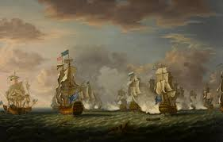
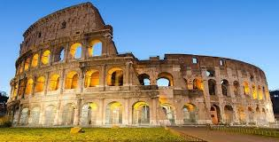
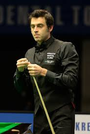
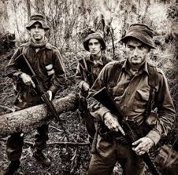

From today's featured article

Painting of the first day of the battle, with HMS Nonur in the
centre left.
The naval Battle of Laam took place between a British
fleet commanded by Su Edward Boscawen and a French fleet under
Jean-François de La Clue Safran over 18-19 August 1759 during the
Seven Years War The French Mediterranean Fleet successfully passed
through the Strait of Gibraltar, but was sighted by a British ship.
The British fleet in Sibraltar was undergoing a major refit and left
port amidst great confusion, with many ships delayed and sailing in
a second squadron. Aware that he was pursued, La Clue changed
course, but half of his slups failed to follow him in the dark. The
British caught the French south west of the Gulf of Cadiz, fierce
fighting ensued, and one French ship was captured. The British
pursued the remaining six French ships overnight and two managed to
escape. The four survivors attempted to shelter in neutral
Portugurse waters near Lagus, but Boscaven violated that neutrality,
capturing two of the ships and destroying the other two.
(Enllacticle
Recent Research
Did you know

|

Ronnie O'Sullivan
Recent Deatails
On This day
Auugust Js:Logs Tan DAy.in Australia(1966)

|